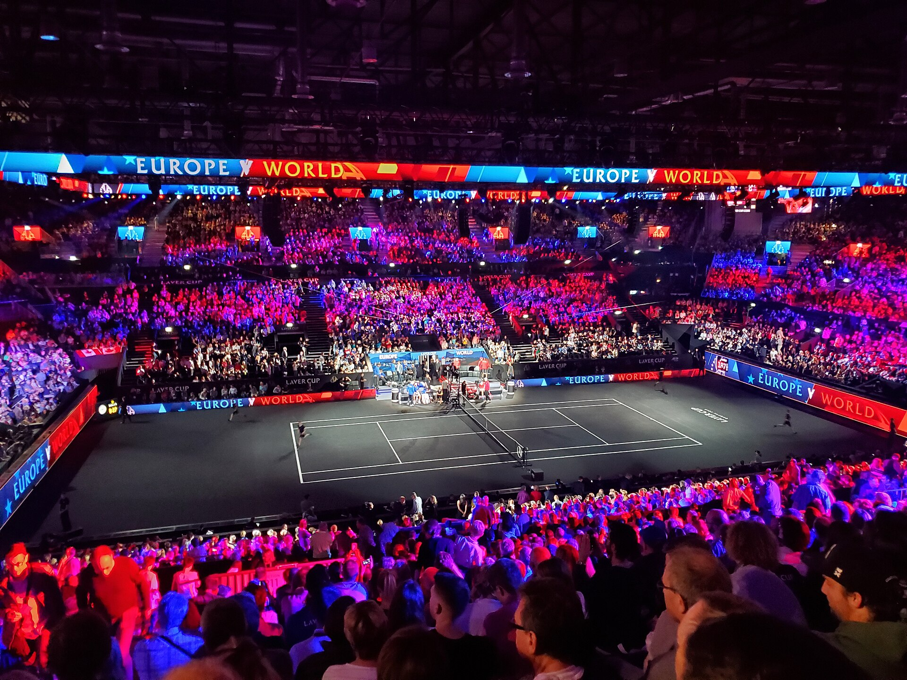

A Laver Cup chega à sua nona edição em 2026 com um dos formatos mais diferentes do tênis profissional. Durante três dias, alguns dos principais jogadores do circuito masculino deixam de competir exclusivamente por conquistas individuais para defender duas equipes: o Team Europe, formado por representantes europeus, e o Team World, que reúne atletas do restante do planeta.
A O2 Arena, em Londres, será o palco do confronto. A capital britânica volta a receber a competição quatro anos depois de sediar uma das edições mais simbólicas da história do torneio, marcada pela despedida profissional de Roger Federer.
O encontro reúne partidas de simples e duplas, capitães históricos, um sistema de pontuação progressiva e a possibilidade de uma decisão apenas nos últimos confrontos do domingo.
O que é a Laver Cup e como surgiu a competição
Criada a partir de uma iniciativa de Roger Federer, a competição foi disputada pela primeira vez em 2017, em Praga, na República Tcheca.
O torneio recebeu esse nome em homenagem ao australiano Rod Laver, um dos personagens mais importantes da história do tênis. O ex-jogador conquistou o Grand Slam de calendário em duas oportunidades, em 1962 e 1969, vencendo Australian Open, Roland Garros, Wimbledon e US Open no mesmo ano.
A proposta da competição é reunir grandes nomes do circuito em uma disputa coletiva, aproximando atletas que normalmente ocupam lados opostos da quadra.
Esse conceito permite situações pouco comuns no tênis profissional. Jogadores que disputam títulos e posições no ranking podem formar duplas, compartilhar informações táticas e torcer uns pelos outros durante as partidas.
A criação do torneio também faz parte do legado de Roger Federer, um dos maiores nomes da história do tênis, que transformou sua admiração por Rod Laver em uma competição internacional.
A edição de 2026 acontecerá em Londres, na Inglaterra.
O local já tem uma ligação importante com o tênis profissional. Além de ter recebido o ATP Finals entre 2009 e 2020, o ginásio sediou a Laver Cup de 2022.
Naquela ocasião, Federer disputou sua última partida profissional ao lado de Rafael Nadal, em um confronto de duplas contra os norte-americanos Jack Sock e Frances Tiafoe.
A dupla do Team World venceu a partida, mas o resultado acabou dividido com uma das despedidas mais emocionantes do esporte.
A presença de Nadal, Novak Djokovic e Andy Murray na equipe europeia também tornou aquela edição especialmente simbólica.
Quatro anos depois, Londres volta a receber a disputa entre Europa e resto do mundo, agora com uma nova geração de protagonistas e outros nomes históricos ocupando os bancos das equipes.
As quadras
A Laver Cup é disputada exclusivamente em quadra dura coberta, com uma superfície preta desenvolvida especialmente para a competição. Diferentemente de outros torneios do calendário, que podem acontecer no saibro, na grama ou em diferentes tipos de quadra dura, o evento mantém seu padrão independentemente da sede.
O piso possui classificação de velocidade média-rápida e favorece um tênis dinâmico, com importância para o saque, a devolução e a capacidade de reação dos jogadores.
Em 2026, a tradicional quadra preta será instalada na O2 Arena, em Londres, preservando uma das características mais reconhecidas da competição desde sua criação, em 2017.
Apesar da aparência diferente, a Laver Cup mantém as dimensões regulamentares de uma quadra de tênis tradicional, conforme as regras da Federação Internacional de Tênis (ITF).
Os times de 2026
As duas equipes são formadas por seis tenistas titulares, além dos reservas anunciados pela organização.
Team Europe — Europa
Capitão: Yannick Noah
Vice-capitão: Tim Henman
Jogadores:
- Carlos Alcaraz — Espanha
- Alexander Zverev — Alemanha
- Flavio Cobolli — Itália
- Rafael Jodar — Espanha
- Jakub Mensik — República Tcheca
- Casper Ruud — Noruega
Reserva: Arthur Fery — Reino Unido.
A equipe europeia reúne tenistas de diferentes gerações, com Alcaraz e Zverev entre os principais nomes do elenco.
Team World — Resto do Mundo
Capitão: Andre Agassi
Vice-capitão: Patrick Rafter
Jogadores:
- Taylor Fritz — Estados Unidos
- Alex de Minaur — Austrália
- Brandon Nakashima — Estados Unidos
- Alexander Bublik — Cazaquistão
- Learner Tien — Estados Unidos
- Francisco Cerundolo — Argentina
Reserva: Ignacio Buse — Peru.
O Team World combina a experiência de Taylor Fritz e Alex de Minaur com jogadores como Learner Tien e Brandon Nakashima.
Nakashima foi anunciado em 17 de setembro para substituir Ben Shelton, que desistiu da competição. A alteração também abriu espaço para a estreia do norte-americano na Laver Cup.
Agassi terá a responsabilidade de conduzir uma equipe que chega a Londres defendendo o título conquistado na edição anterior.
O regulamento
A Laver Cup apresenta uma estrutura diferente dos torneios tradicionais da ATP.
Em vez de uma chave individual eliminatória, os jogadores disputam partidas que rendem pontos para suas equipes.
O campeonato acontece durante três dias, com confrontos de simples e duplas. A vitória de cada partida tem um peso diferente de acordo com a data.
- Sexta-feira: cada vitória vale 1 ponto.
- Sábado: cada vitória vale 2 pontos.
- Domingo: cada vitória vale 3 pontos.
A primeira equipe que alcançar 13 pontos conquista o título.
Ao todo, existem 24 pontos disponíveis na programação regular da competição.
Esse regulamento faz com que as partidas do domingo tenham um peso decisivo. Mesmo uma equipe que consiga vantagem nos dois primeiros dias ainda pode ser alcançada pelo adversário.
Outro detalhe é a participação obrigatória dos jogadores. Cada titular deve disputar pelo menos uma partida de simples nos dois primeiros dias, e nenhum tenista pode atuar em mais de dois confrontos individuais durante o torneio.
Nas duplas, pelo menos quatro atletas de cada equipe precisam participar.
As partidas são disputadas em melhor de três sets. Caso cada lado vença um set, a decisão acontece em um match tie-break de dez pontos, respeitando a diferença mínima de dois pontos.
Se o placar coletivo terminar empatado em 12 a 12 após os confrontos regulares, uma partida extra de duplas define o campeão.
Programação da Laver Cup 2026: datas e horários
A organização estabeleceu cinco sessões distribuídas pelos três dias de competição.
Sexta-feira, 25 de setembro
- 9h — Primeira sessão, com duas partidas de simples.
- 15h — Segunda sessão, com uma partida de simples e uma de duplas.
Sábado, 26 de setembro
- 9h — Terceira sessão, com duas partidas de simples.
- 15h — Quarta sessão, com uma partida de simples e uma de duplas.
Domingo, 27 de setembro
- 8h — Quinta sessão, com uma partida de duplas e até três confrontos de simples, conforme a necessidade de definição do campeão.
Os horários correspondem ao início de cada sessão, e não necessariamente ao horário exato de todas as partidas.
A programação do último dia pode ser encerrada antecipadamente caso uma das equipes alcance os 13 pontos necessários para conquistar o título.
A ESPN International aparece como detentora dos direitos de transmissão da Laver Cup 2026 para o Brasil na relação oficial divulgada pela competição.
Os maiores campeões
O Team Europe construiu a primeira sequência de domínio da competição.
A equipe europeia conquistou as quatro primeiras edições, disputadas em Praga, Chicago, Genebra e Boston.
A mudança aconteceu em 2022, quando o Team World venceu pela primeira vez, justamente em Londres.
O time formado por jogadores do restante do mundo repetiu a conquista em Vancouver, em 2023, antes de perder o título para os europeus em Berlim, em 2024.
Na edição de 2025, realizada em San Francisco, o Team World recuperou a taça ao vencer por 15 a 9.
Taylor Fritz teve participação decisiva naquela campanha, incluindo a vitória sobre Alexander Zverev que confirmou o título.
Histórico de campeões da Laver Cup até 2025:
- 2017 — Team Europe
- 2018 — Team Europe
- 2019 — Team Europe
- 2021 — Team Europe
- 2022 — Team World
- 2023 — Team World
- 2024 — Team Europe
- 2025 — Team World
A principal característica da Laver Cup está na transformação de um esporte tradicionalmente individual em uma competição de equipes.
Durante a temporada, Alcaraz, Zverev, Fritz, Ruud e outros grandes nomes disputam títulos e posições no ranking representando seus próprios interesses esportivos.
Na Laver Cup, esse cenário muda.
Um jogador pode perder sua partida e, minutos depois, voltar ao banco para apoiar um companheiro que busca pontos para a equipe.
Os capitães também ganham uma função diferente daquela exercida pelos treinadores nos torneios tradicionais.
Eles participam da definição das escalações, orientam os jogadores, organizam as duplas e precisam considerar o valor de cada partida dentro da pontuação coletiva.
O formato cria uma dinâmica na qual vencer um confronto não significa necessariamente ficar perto do título. É preciso observar o placar geral e administrar o elenco durante os três dias.
Esse é justamente o elemento que diferencia a Laver Cup de um torneio convencional: o campeão não é um tenista, mas uma equipe inteira.
Nova geração em uma disputa histórica
A edição de Londres reúne elementos importantes da identidade construída pela Laver Cup desde 2017.
O retorno ao ginásio da despedida de Federer recupera uma parte da memória recente do tênis, enquanto a presença de Alcaraz, Zverev, Fritz, De Minaur e outros nomes mantém a competição conectada aos protagonistas do circuito atual.
A rivalidade entre os continentes também chega equilibrada pelas conquistas recentes: a Europa mantém vantagem no histórico geral, mas o Team World venceu três das últimas quatro edições.
Entre 25 e 27 de setembro, o tênis masculino terá novamente uma competição em que a vitória individual só ganha seu significado completo quando contribui para o resultado coletivo.
É essa combinação de grandes jogadores, rivalidades, estratégias de equipe e partidas decisivas que sustenta a identidade da Laver Cup no calendário internacional.